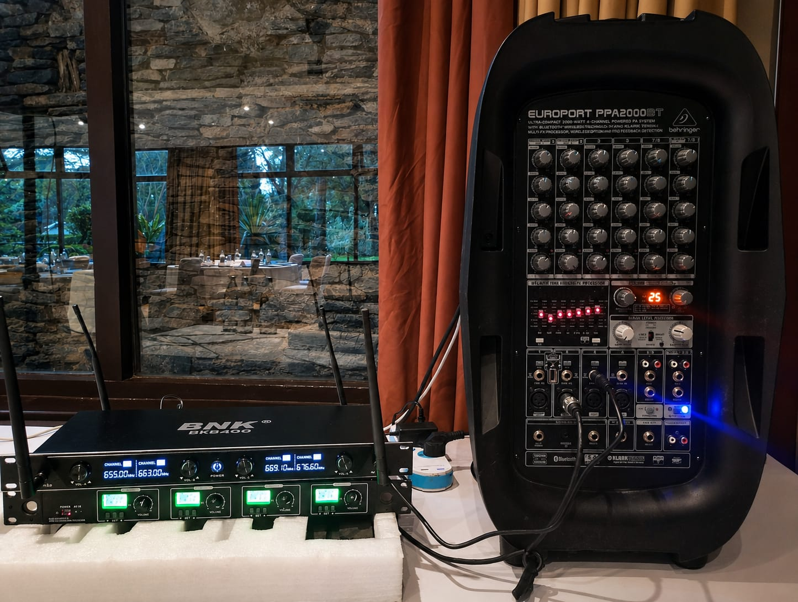
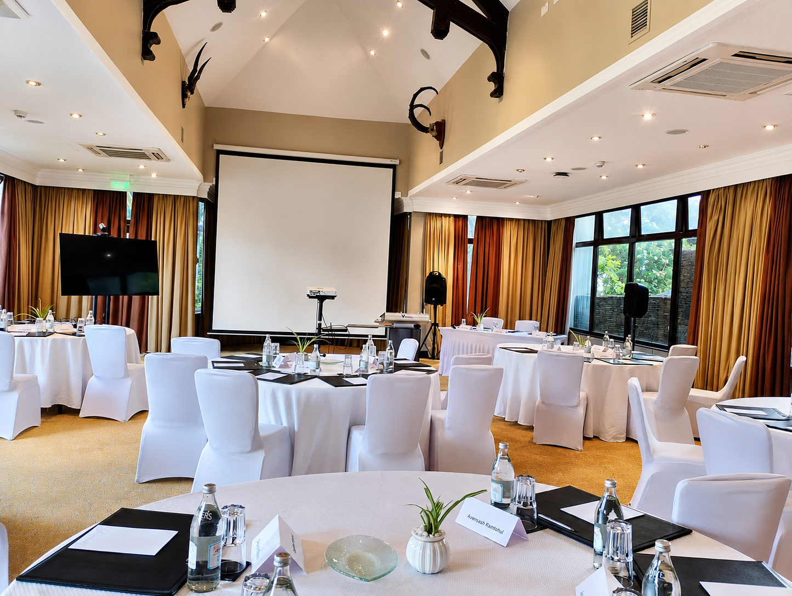

Project Overview
Installed, configured, and supported audio-visual systems within educational environments to improve digital learning experiences and classroom engagement. The project focused on ensuring reliable AV performance, seamless connectivity, and user-friendly operation for educators and learners.
A key example involved supporting AV installation and classroom technology integration at Guara Primary & Junior School.
Key Focus: Delivering reliable AV installations and ongoing technical support to enhance teaching, collaboration, and digital classroom experiences.
Key Responsibilities
- Installed and configured Interactive Flat Panels and AV equipment.
- Supported classroom technology integration and connectivity.
- Conducted system testing and troubleshooting.
- Provided user guidance and operational support for educators.
- Performed routine maintenance and technical assistance.
- Ensured proper cable management and device setup.
- Assisted in optimizing classroom AV performance.
Systems & Technologies Installed
- Interactive Flat Panels
- Audio Enhancement Systems
- Wireless Presentation Tools
- Classroom Display Systems
- Laptop & Device Connectivity Solutions
- Educational Presentation Technologies
Tools & Technologies Used
Interactive Classroom Technologies
HDMI & Wireless Display Connectivity
Windows Systems
AV Configuration & Troubleshooting Tools
Presentation & Collaboration Platforms
Support & Maintenance Activities
- Diagnosing and resolving connectivity issues
- Performing software and firmware updates
- Supporting educators during classroom sessions
- Maintaining AV equipment functionality
- Providing preventive maintenance support
- Ensuring optimal display and audio performance
Impact & Outcomes
- Improved classroom interaction and engagement.
- Enhanced digital teaching and presentation capabilities.
- Increased educator confidence in using classroom technology.
- Supported smooth and reliable AV system operations.
- Strengthened technology-enabled learning experiences.
Project Evidence


Skills Demonstrated
- AV Installation & Configuration
- Technical Support & Troubleshooting
- Interactive Classroom Technology
- Preventive Maintenance
- Digital Classroom Integration
- User Support & Training
- System Testing & Optimization
Project Outcome
This project strengthened practical experience in AV deployment, classroom technology support, and maintenance of digital learning systems. It also enhanced the ability to support technology-driven educational environments through reliable installation and ongoing technical assistance.